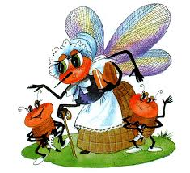
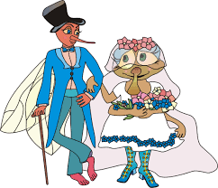

1 / 3

Caption Text
2 / 3

Caption Two
3 / 3

Caption Three
Муха, Муха-Цокотуха, Позолоченное брюхо! Муха по полю пошла, Муха денежку нашла. Муха денежку нашла Пошла Муха на базар И купила самовар: Муха купила самовар ‘Приходите, тараканы, Я вас чаем угощу!’ Тараканы прибегали, Все стаканы выпивали, Тараканы и букашки бегут А букашки — По три чашки С молоком И крендельком: Нынче Муха-Цокотуха Именинница! Приходили к Мухе блошки, Приносили ей сапожки, А сапожки не простые — В них застежки золотые. Муха-Цокотуха и гости Приходила к Мухе Бабушка-пчела, Мухе-Цокотухе Меду принесла: ‘Бабочка-красавица. Кушайте варенье! Или вам не нравится Наше угощение?’ Вдруг какой-то старичок Паучок Нашу Муху в уголок Поволок — Хочет бедную убить, Цокотуху погубить! ‘Дорогие гости, помогите! Паука-злодея зарубите! И кормила я вас, И поила я вас, Не покиньте меня В мой последний час!’ Но жуки-червяки Испугалися, По углам, по щелям Разбежалися: Тараканы Под диваны, А козявочки Под лавочки, А букашки под кровать — Не желают воевать! Букашки прячутся И никто даже с места Не сдвинется: Пропадай-погибай, Именинница! А кузнечик, а кузнечик, Ну, совсем как человечек, Скок, скок, скок, скок! За кусток, Под мосток И молчок! А злодей-то не шутит, Руки-ноги он Мухе верёвками крутит, Зубы острые в самое сердце вонзает И кровь у неё выпивает. Муха криком кричит, Надрывается, А злодей молчит, Ухмыляется. Вдруг откуда-то летит Маленький Комарик, И в руке его горит Маленький фонарик. ‘Где убийца, где злодей? Не боюсь его когтей!’ Подлетает к Пауку, Саблю вынимает И ему на всём скаку Голову срубает! Муху за руку берёт И к окошечку ведёт: ‘Я злодея зарубил, Я тебя освободил И теперь, душа-девица, На тебе хочу жениться!’ Муха-Цокотуха и комар Тут букашки и козявки Выползают из-под лавки: ‘Слава, слава Комару — Победителю!’ Прибегали светляки, Зажигали огоньки — То-то стало весело, То-то хорошо! Букашки Эй, сороконожки, Бегите по дорожке, Зовите музыкантов, Будем танцевать! Музыканты прибежали, В барабаны застучали. Музыканты насекомые Бом! бом! бом! бом! Пляшет Муха с Комаром. А за нею Клоп, Клоп Сапогами топ, топ! Козявочки с червяками, Букашечки с мотыльками. А жуки рогатые, Мужики богатые, Шапочками машут, С бабочками пляшут. Насекомые танцуют Тара-ра, тара-ра, Заплясала мошкара. Веселится народ — Муха замуж идёт За лихого, удалого, Молодого Комара! Муравей, Муравей! Не жалеет лаптей, — С Муравьихою попрыгивает И букашечкам подмигивает: ‘Вы букашечки, Вы милашечки, Тара-тара-тара-тара-таракашечки!’ Сапоги скрипят, Каблуки стучат, — Будет, будет мошкара Веселиться до утра: Нынче Муха-Цокотуха Именинница!